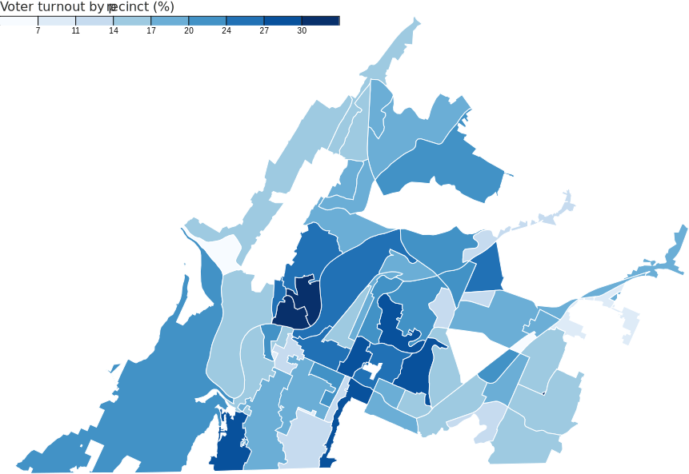

{% include head.html %}
{{ site.title }}
Chattanooga 2017 city election turnout

Citywide
Registered voters: 96,333
Ballots cast: 18,968
19.7% turnout
Graphic:
Metro Ideas Project
Source: Hamilton County Election Commission